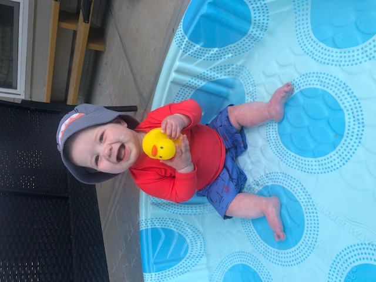

Accomplishments
Baby
Having her healthy baby boy is one of the greatest accomplishments Kama has achieved. He has given her so much pride and joy and continues to fulfill her heart and soul. She cannot wait to see him grow up.
Marriage

Getting married was an amazing thing for Kama. She grew up dreaming of her wedding like many girls and when it arrived she was overjoyed. She loves being married and sharing her life with someone who she can grow with.
Masters

Completing her Masters degree in teaching was a huge sense of pride. She worked many nights finishing papers and spent even more in class after long days of working. When she finally finished there was an overwhelming sense of relief and accomplishment.